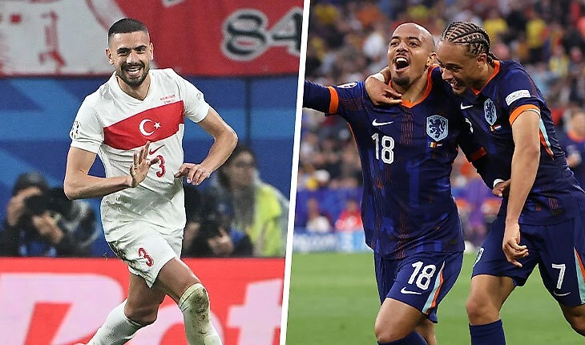
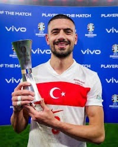

On July 2, the Turkish team beat the Austrian team 2:1. This day will go down in their history. They reached the quarter finals of EURO 2024
Turkey and the Netherlands will play on July 6 at the Olympic Stadium. The game promises to be interesting!
Merih Demiral scored two winning goals for the Turkish national team in a meeting with Austria. If it weren’t for him, I don’t know how Turkey would have won Austria. This is incredible!